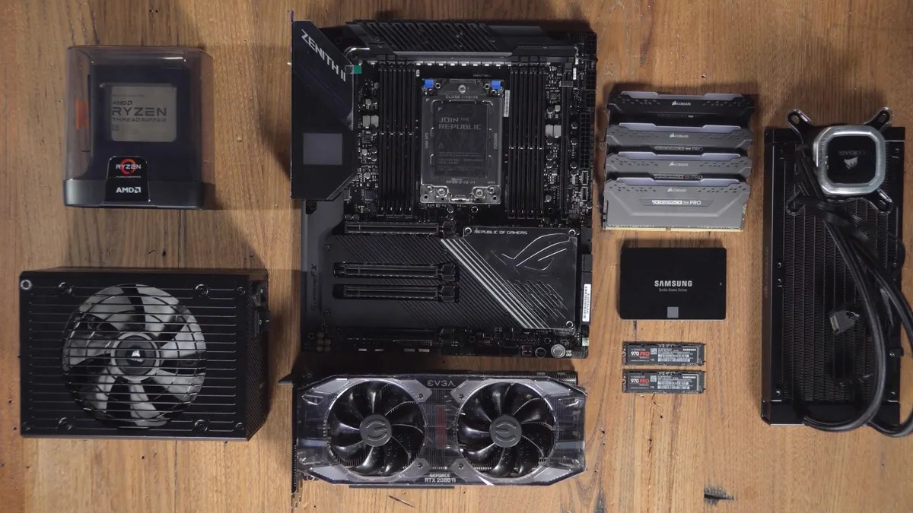

I enjoy working on computers such as upgrading parts or overclocking to achieve maximum performance. I just find it deeply satisfying to build a pc from scratch and watching it successfully boot up for the first time.
Want to explore more about PC building? Check out PCPartPicker - a great resource for planning and comparing builds.